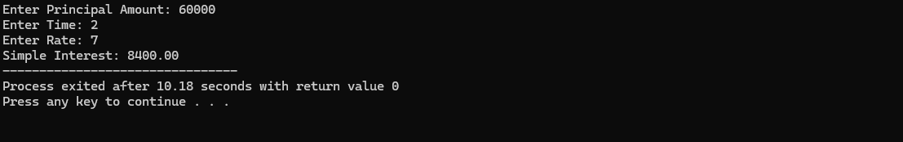
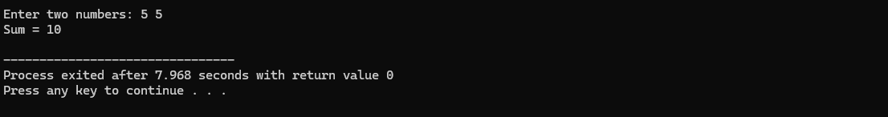
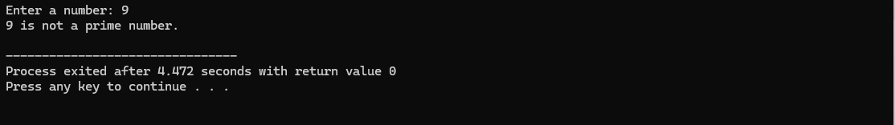
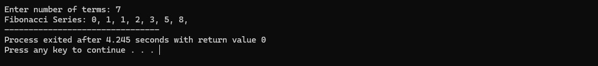

Write a C program to calculate the SI after taking data input.
#includeint main(){ int p, t, r; float si; printf("Enter Principal Amount: "); scanf("%d", &p); printf("Enter Time: "); scanf("%d", &t); printf("Enter Rate: "); scanf("%d", &r); si = (p * t * r) / 100.0; printf("Simple Interest: %.2f", si); return 0; }
The output of the above program should display:
Write a C program to calculate the sum of two numbers entered by the user.
#includeint main() { int num1, num2, sum; printf("Enter two numbers: "); scanf("%d %d", &num1, &num2); sum = num1 + num2; printf("Sum = %d\n", sum); return 0; }
The output should look like this when the user enters two numbers:
Write a C program to check whether a given number is prime or not.
#includeint main() { int num, i, flag = 0; printf("Enter a number: "); scanf("%d", &num); for (i = 2; i <= num / 2; ++i) { if (num % i == 0) { flag = 1; break; } } if (flag == 0) printf("%d is a prime number.\n", num); else printf("%d is not a prime number.\n", num); return 0; }
The output should indicate whether the entered number is prime or not:
Write a C program to generate the Fibonacci series up to a given number of terms.
#includeint main() { int n, first = 0, second = 1, next, i; printf("Enter number of terms: "); scanf("%d", &n); printf("Fibonacci Series: "); for (i = 1; i <= n; ++i) { if (i == 1) { printf("%d, ", first); continue; } if (i == 2) { printf("%d, ", second); continue; } next = first + second; first = second; second = next; printf("%d, ", next); } return 0; }
The Fibonacci sequence will be displayed based on the user input:
